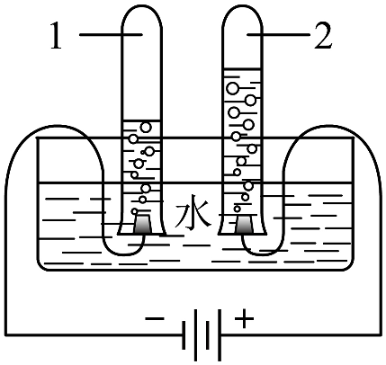

2026年北京市顺义区初中学业水平考试化学试卷 · 选择题 第16、17、18、19、20题 · 对应解析
16. 下列物质能除铁锈的是
A. 盐酸B. 植物油C. 石灰水D. 水
【答案】A
【解析】
【详解】铁锈的主要成分为氧化铁（），属于金属氧化物，可与酸反应生成可溶性盐和水，其他几种物质均不与氧化铁反应。故选A。
传统节日蕴含丰富的文化内涵。完成下面小题。
17. 春节蒸发糕。小苏打(碳酸氢钠)可作为发糕制作的膨松剂，其化学式为
A. B. C. D. 
18. 元宵节做灯笼。下列制作灯笼的部件中，用到金属材料的是
A. 纸质灯罩B. 竹制骨架C. 丝绸灯穗D. 铜制挂钩
19. 重阳节赏菊。能闻到菊花香的原因是
A. 分子在不断运动B. 分子间有空隙
C. 分子的质量很小D. 分子由原子构成
【答案】17. D 18. D 19. A
【解析】
【17题详解】
碳酸氢钠俗称小苏打，由和构成，化学式为。
【18题详解】
铜制挂钩的铜属于纯金属，为金属材料；纸质灯罩、竹制骨架、丝绸灯穗都属于天然有机材料。
【19题详解】
闻到花香是因为带有香味的分子在不断运动，扩散到空气中被人感知。
20. 电解水实验如下图。下列说法不正确的是

A. 试管1中得到H2
B. 水由H2、O2组成
C. 水由氢、氧元素组成
D. 试管1、2中气体的体积比约为2∶1
【答案】B
【解析】
【分析】在电解水实验中，“正氧负氢”，生成氢气和氧气的体积比约为2:1。
【详解】A.试管1连接电源负极，负极产生，说法正确。
B.水是纯净物，仅由水分子构成，不含、 两种物质，说法错误。
两种物质，说法错误。
C.电解水生成和，根据反应前后元素种类不变，可证明水由氢、氧元素组成，说法正确。
D.试管1中是，试管2中是，二者体积比约为，说法正确。